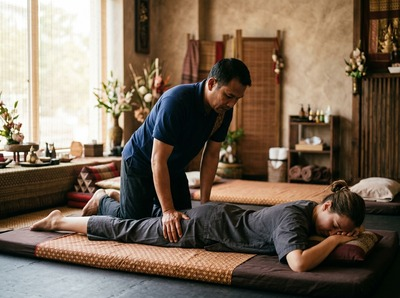

★★★★★ Quality gate failures: readability. Review and edit before removing this notice. ★★★★★
When an injury sidelines you, the road back to full function can feel long and uncertain.
Whether you're dealing with a muscle tear, a sprained joint, post-surgical stiffness, or a soft tissue strain, the quality of your rehab determines how well and how quickly you recover. Thai massage, and targeted massage therapy more broadly, plays a real role in that process — not as a replacement for clinical care, but as a powerful addition to it.
Injury rehabilitation is the process of restoring function, strength, and movement after an acute or chronic injury. As defined by the World Health Organization, rehabilitation is the restoration of optimal form and function after injury or illness. The goal is to return you to daily life, sport, or work.

It typically starts with reducing pain and swelling. Over time, the focus shifts to rebuilding strength, range of motion, and control.
Common injuries that need rehab include muscle strains, ligament sprains, tendon injuries, joint problems, and recovery after surgery. Left untreated, soft tissue injuries often lead to altered movement, scar tissue build-up, and pain that becomes harder to resolve.
Massage therapy supports recovery through several well-documented effects. Better blood flow to the injured area speeds up delivery of oxygen and nutrients needed for tissue repair. It also helps clear waste products from damaged muscle. Research on PubMed examining massage and injury recovery highlights increased blood flow and reduced muscle tension as core benefits, alongside lower nerve sensitivity that helps ease pain.
Sports massage uses firm, targeted pressure on specific muscle groups and connective tissue. It helps break down adhesions and scar tissue that restrict movement and cause ongoing discomfort. Swedish massage uses long, flowing strokes to boost circulation and aid relaxation — well suited to the earlier, more sensitive stages of recovery.
Thai massage adds another layer. Its assisted stretching uses traditional techniques to mobilise joints and lengthen connective tissue. This helps restore range of motion that injury and rest can significantly reduce.
Hot stone massage uses heated basalt stones to warm and loosen deep muscle tissue. It can ease chronic tension around old or recurring injuries where muscles have tightened around the site of damage. Together, these approaches form a flexible toolkit that adapts to wherever you are in your recovery.
Book your rehabilitation session online and note your condition at the time of booking so your therapist is prepared before you arrive.
At Serendipity Massage Therapy & Wellness on Hope Street in Glasgow City Centre, every session begins with a conversation. Your therapist will ask about your injury, how long you've had it, and what your recovery goals are. That shapes the entire treatment.
There is no generic approach here. The techniques, pressure, and areas of focus are all chosen based on what your body needs at that stage of recovery.
For rehab clients, sessions often combine sports massage for soft tissue work with assisted stretching from the Thai massage tradition. This helps restore mobility without loading healing tissue too soon. You can note your condition at booking so your therapist is fully prepared before you arrive.
Massage-supported rehab is especially useful for active people recovering from sports injuries, gym strains, or overuse conditions like tendinopathy. It also helps office workers with postural injuries from long hours at a desk.
It suits people regaining mobility after surgery, and anyone whose injury has become chronic through incomplete treatment. If you're working with a physiotherapist or GP, massage fits well alongside that care. Book online now to add massage to your existing rehabilitation plan.
It depends on the type and stage of injury. In the acute phase — typically the first 48 to 72 hours — the area should not be massaged directly, as this can aggravate inflammation. Once that phase has passed, targeted massage away from the injury site, and eventually over it, can actively support healing. Always tell your therapist about your injury before the session so they can adapt the treatment.
This varies depending on the severity of the injury, how long it has been present, and how your body responds to treatment. Many clients notice real improvement after two or three sessions. A more complex or long-standing injury may need a longer course of regular treatment. Your therapist will talk through a realistic plan with you after the first session.
Massage therapy and physiotherapy address different aspects of recovery. They work best together, not as alternatives. Physiotherapy focuses on movement, strengthening, and clinical assessment. Massage targets soft tissue health, circulation, pain, and mobility. If you are under the care of a physiotherapist or GP, let your massage therapist know so both treatments can support each other.
Soft tissue injuries tend to respond particularly well. These include muscle strains and tears, ligament sprains, tendinopathy, and post-surgical scar tissue. Massage also helps with chronic conditions that develop from repetitive strain or poor posture. It is less suited as a primary treatment for fractures or acute joint injuries until those have been clinically assessed and stabilised.
Effective rehabilitation massage should not be painful, though some areas of tension or scar tissue may feel uncomfortable when worked on. Your therapist will check in throughout the session and adjust pressure to keep it productive rather than distressing. Open communication during the session helps you get the most from the treatment without unnecessary discomfort.
This depends on the type of surgery and your surgeon's advice, so it is always worth checking with your medical team first. In general, massage to areas away from the surgical site can often begin fairly early in recovery. It helps support circulation and reduce tension elsewhere in the body. Work around the surgical site itself is introduced later, once healing is well established.